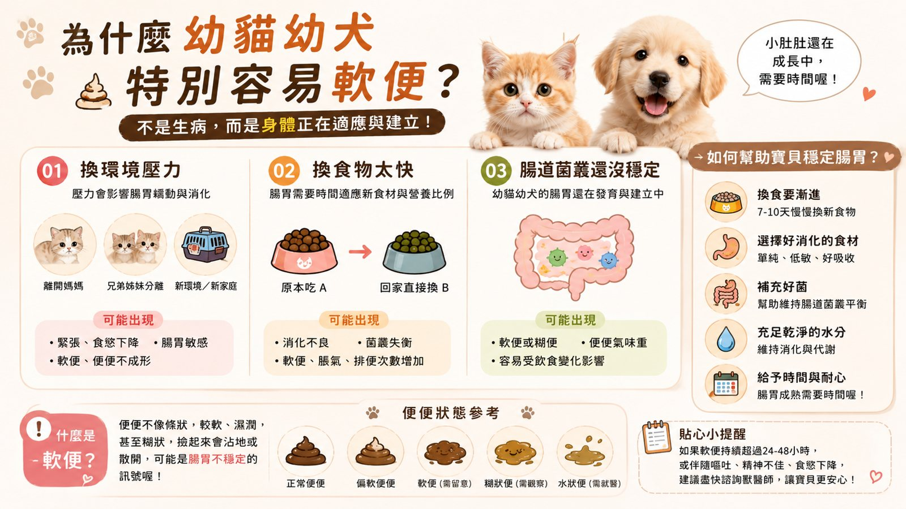

腸道 × 腎臟 保養手冊簡易版・免費看
香菇爸護貓手冊
腸道顧好吃得香
腸道顧好吃得香
腎臟要從年輕顧
香菇 8 年的日常照顧重點 ~ 先看簡易版，想要完整版加 LINE 領
腸道・便便挑食喝水・腎臟
目錄
這份手冊在講什麼
腸道 01
為什麼幼貓特別容易軟便？
多數不是生病 是身體還在適應

🔍 點圖片可以放大看1
換食物要慢7～10 天新舊混著換，不要一次全換
2
環境先穩定剛到新家壓力大，腸胃也會跟著敏感
3
水要喝夠水喝夠，消化和排便才順
!
軟便超過 24～48 小時、或拉水、帶血
加上嘔吐、沒精神、不吃 ~ 請直接就醫，幼貓更不能等
腸道 02
挑食 有時候是腸胃在說話
 🔍 點圖片可以放大看
🔍 點圖片可以放大看
挑食不一定是任性 ~ 常見是每天換口味被養刁、食物放太久不香，或是腸胃狀態不穩讓食慾跟著起伏。先固定主食、固定時間，再觀察便便，常常就能找到原因。
腎臟 01
先算一下 牠一天該喝多少水
🧮大約每公斤 40～60ml4 公斤的貓 一天約 160～240ml（食物裡的水也算）
🥫濕食也是補水主食罐、湯湯水水的食物都算在內
🥣多放幾個水碗離飯碗、貓砂盆遠一點，每天換新鮮的水
👀看尿團貓砂盆的尿團大小、次數，是最好的觀察指標
腎臟 02
腎臟 為什麼要早點注意？
貓很會忍 腎臟出狀況早期幾乎沒症狀
腎臟是貓咪很常被提醒要注意的器官，早期通常看不出來，等到喝多尿多、變瘦才發現，往往已經不是剛開始了。
所以香菇爸的做法是：年輕就把水顧好、定期健檢看數字，不是等出事才處理。
1～6 歲
每年健檢一次可以順便問醫生要不要驗血、驗尿
7 歲以上
建議半年一次包含血液和腎臟相關指數 ~ 香菇 8 歲也是這樣做
!
喝水和尿量突然變多、變瘦、口臭、沒食慾
記錄下來，盡快給獸醫看
完整版
還有更多 都在完整版裡
 🔒 完整版內容
🔒 完整版內容加 LINE 就能看
📘 護貓手冊完整版
- 💩 便便 7 型對照＋什麼時候要就醫
- 🍽️ 換糧日曆＋挑食改善步驟
- 💧 每日喝水量表＋讓貓多喝水的 8 個方法
- 🫘 不同年齡的健檢清單
- 🦴 骨骼關節發展・貓舍送貓前檢查
關於這份手冊內容為香菇爸整理的日常照顧觀念，不是醫療建議 ~ 每隻貓狀況不同，有任何異常請先就醫
© 2026 香菇爸